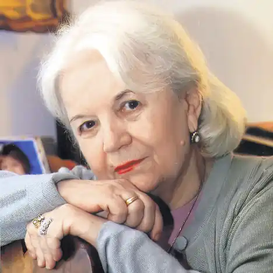
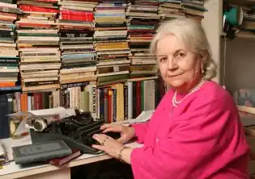
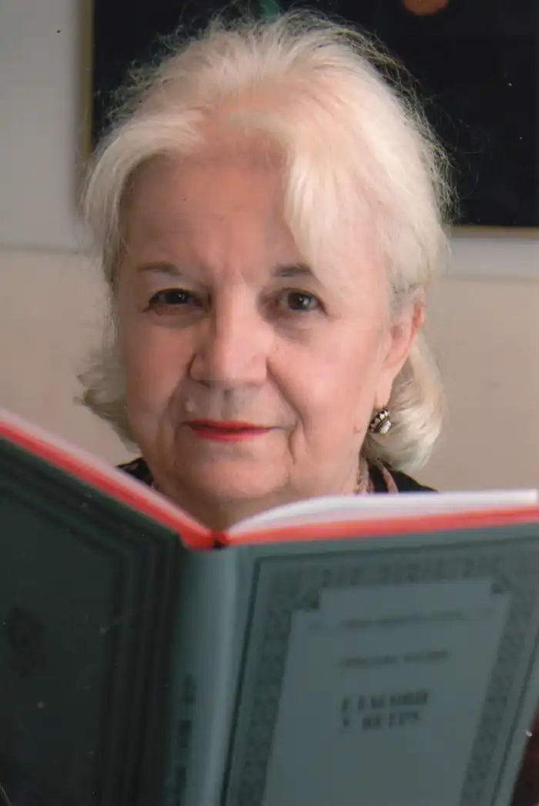

Гроздана Олуіч народилася 30 серпня 1934 року в сербському селі Ердевіке, закінчила школу в Бечее. Отримала ступінь магістра з англійської мови та літератури на філософському факультеті Белградського університету. Популярність до Грозданов Олуіч прийшла рано. Перший роман "Прогулянка на небо" ( "Izlet u nebo") побачив світ у 1958 році, коли письменниці було 24 роки. Книга стала бестселером, була перекладена кількома європейськими мовами і отримала нагороду Народного освіти за кращий роман Республіки Югославії. Роман був адаптований для сцени, а в 1962 за мотивами книги югославський режисер Йован Жівановіч зняв мелодраму "Чудна дівчинка" ( "Čudna devojka").
Що вийшли в 60-і роки романи "Голосую за любов" ( "Glasam za ljubav"), "Не буди заснулу собаку" ( "Ne budi zaspale pse") і "Дике насіння" ( "Divlje seme") затвердили Грозданов Олуіч як одного з провідних авторів югославської літератури.
Новела "Гра" ( "Igra") зі збірки "Африканська фіалка" ( "Afrička ljubičica"), що вийшов в 1985 р, отримала головний приз міжнародного конкурсу в Арнсберзі (Німеччина). Майже всі розповіді зі збірки були переведені на іноземні мови і включені в антології короткої прози по всьому світу (в Німеччині, США, Україні, Росії, Ізраїлі, Індії, Великобританії, Франції і т. Д.). У 2009 році письменниця з романом "Голосу на вітрі" ( "Glasovi u vetru") стає лауреатом Премії тижневика НИН, головною літературної нагороди Сербії. Гроздана Олуіч — автор декількох популярних книг для дітей і юнацтва. Збірник належать її перу казок "Чарівна мітла" був виданий в СРСР в 1985 році стотисячним тиражем.